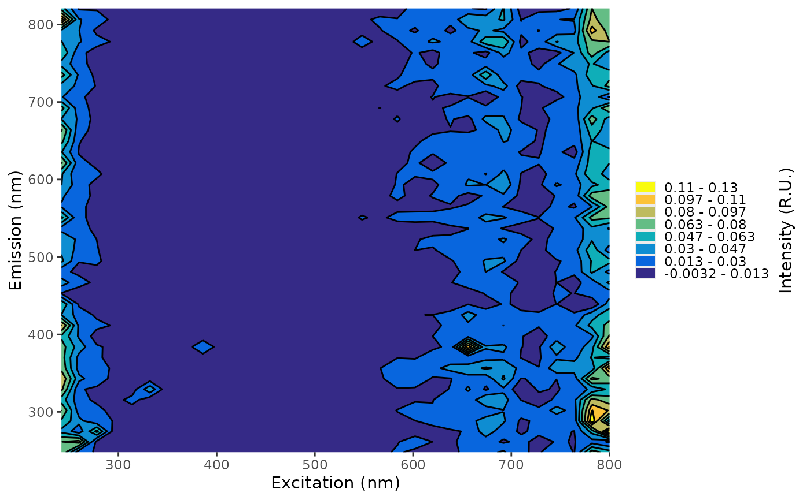

The method detection limit (MDL) is the minimum signal at which we can confidently distinguish a measurement from zero and from analytical blanks. Here, the MDL is calculated using the approach proposed by Hansen et al. (2018): MDL = mean(long-term blank) + 3 × SD(long-term blank).
Usage
create_mdl(
dir,
meta_name = NULL,
sheet = NULL,
iblank = "BEM",
type = "eem",
recursive = FALSE,
qaqc_dir = NULL
)Source
Hansen, A. M., Fleck, J., Kraus, T. E. C., Downing, B. D., von Dessonneck, T., & Bergamaschi, B. (2018). Procedures for using the Horiba Scientific Aqualog® fluorometer to measure absorbance and fluorescence from dissolved organic matter (USGS Numbered Series No. 2018-1096). U.S. Geological Survey. doi:10.3133/ofr20181096
Arguments
- dir
Path to a folder containing long-term EEMs and/or absorbance files. All files in this directory will be loaded.
- meta_name
Name of the metadata file. Optional if the metadata file is the only
.xlsxor.csvfile indir. If not specified, the function attempts to find a single metadata file and errors if multiple files are present.- sheet
Name of the sheet containing metadata (only required if the metadata is not on the first sheet of an
.xlsxfile).- iblank
Optional. A character string containing a base::regular expression used to identify instrument blanks.
- type
Which MDL to calculate: either "eem" or "abs".
- recursive
Logical. Should the function recursively search directories?
- qaqc_dir
Directory in which to save the QAQC
.rdsfile. Default: a user-specific data directory viarappdirs::user_data_dir(). IfFALSE, the function returns the MDL object instead of saving it.
Value
If
qaqc_dir = FALSE: returns aneemorabsobject containing MDL values.Otherwise: saves an
.rdsfile containing the MDL object and invisibly returns the file path.
Details
To calculate the MDL, you need:
A directory containing analytical blanks and instrument blanks (fewer than 20 blanks triggers a warning). Note: sample names must be unique.
A metadata file for the blanks containing, at minimum, integration time and Raman area, formatted as a metadata file described in metadata.
Examples
eem_mdl <- create_mdl(
file.path(system.file("extdata", package = "eemanalyzeR"), "long-term-blanks"),
type = "eem",
qaqc_dir = FALSE
)
#> No Meta file specified, using:
#> /home/runner/work/_temp/Library/eemanalyzeR/extdata/long-term-blanks/longtermblank-metadata.csv
#> NOTE: removed previous 'readme' file
#> Warning: Calculating MDL based on less than 20 samples, MDL may be unreliable
plot(eem_mdl)
